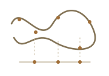
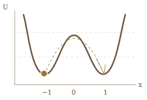

Phys. Rev. Res.


I am currently a PhD student in Applied Mathematics at Department of Mathematics, University of California, Berkeley.
My research interests include Stochastic Analysis with applications to Statistical Physics and Theoretical Chemistry.
Prior to this, I received my B.S. in Mathematics from Fudan University, advised by Prof. Yunxin Zhang.

Biophys. J. 124 (2025), pp. 4102–4112.
An Introduction to Metadynamics: Adiabatic Assumption, Asymptotic Behavior, and Convergence
Metadynamics is a widely used enhanced sampling method in biophysics for exploring free energy surfaces of complex molecular systems. Together with its many variants, metadynamics has been successfully applied to many real-world systems over the past decades. However, its mathematical foundation has received limited attention. In this talk, I will present a mathematical formulation of well-tempered metadynamics, derive an integro-differential equation governing its asymptotic behavior, and discuss convergence results for three special forms of biasing hills.
Thirty Years of Stochastic Gene Expression Problem